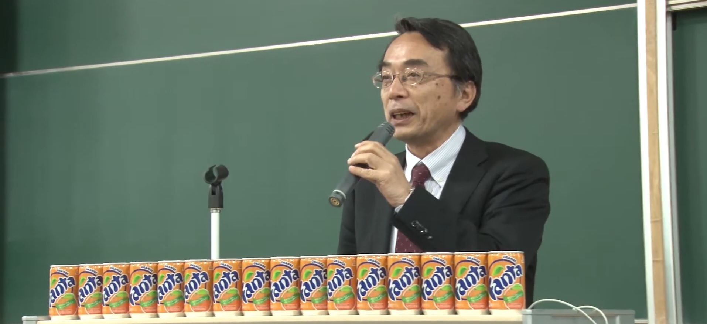
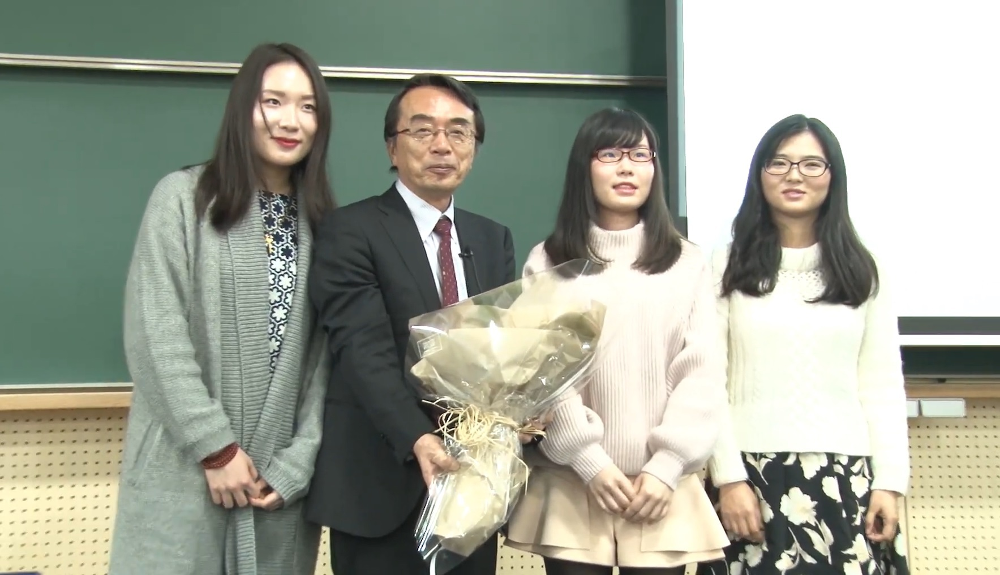

田中克己先生古希記念研究会
 
ご参加いただける方は、こちらから参加登録を行って下さい。
本会は、三部構成となっております。スケジュールはこちらのように計画しています。 第一部は13時から17時までで、参加者の皆様に、ポスター発表していただきたいと思います。 第二部は17時から18時までで、田中克己先生に、翌日古希を迎えることをふまえて、ご講演をいただきます。 第三部は18時から21じまでで、今時はやりのオンライン飲み会を行います。 自分の飲み食いは自分で用意する、ということではありますが、ここにたどり着いた方は、どなたでも無料で自由にご参加いただければと思います。
お近くの、田中克己先生ゆかりの方々にも、ぜひ、広めていただければと思います。 では、近々お目にかかれるのを楽しみにしております。
運営一同